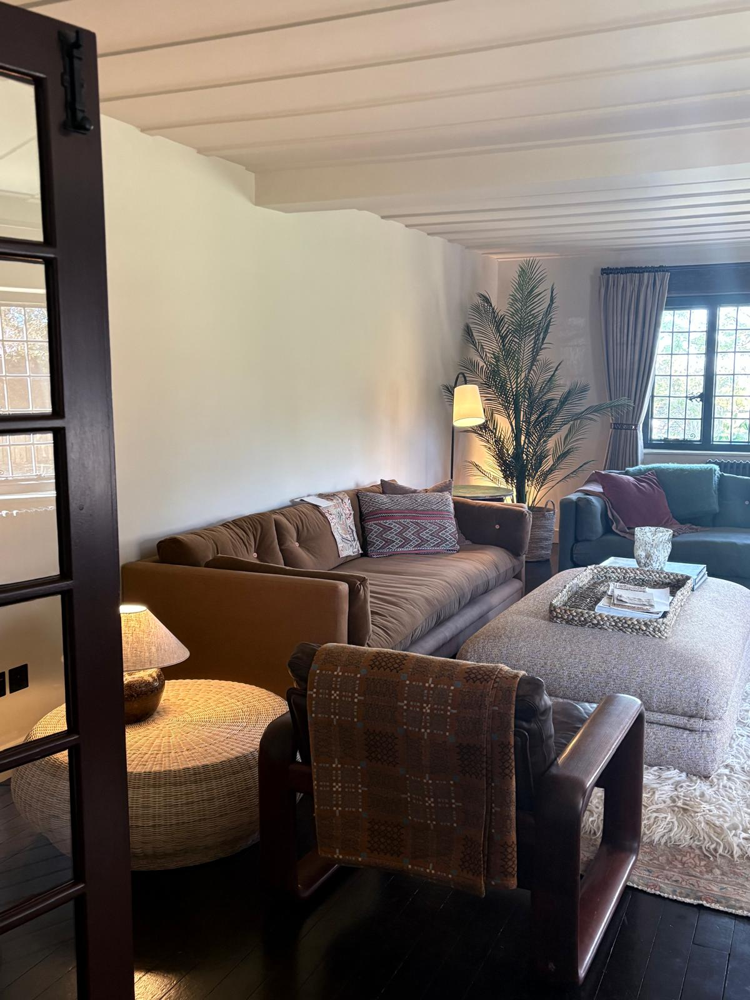
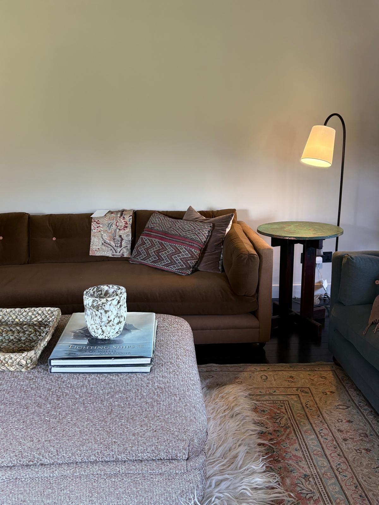
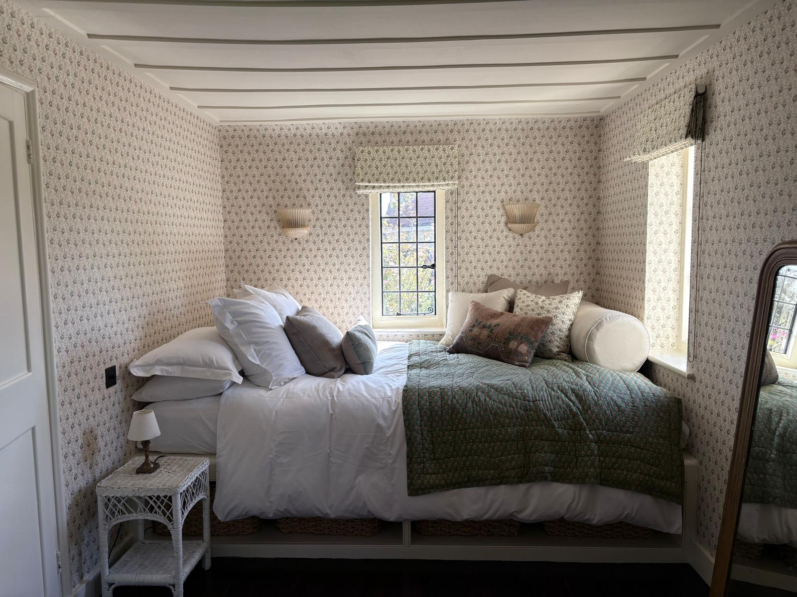
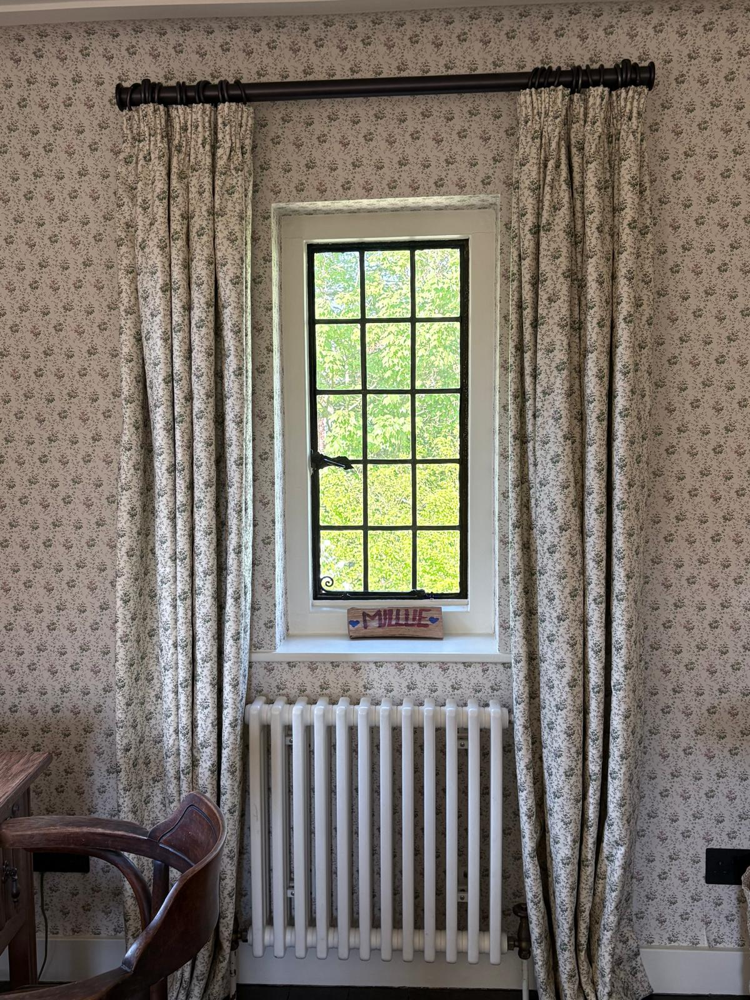
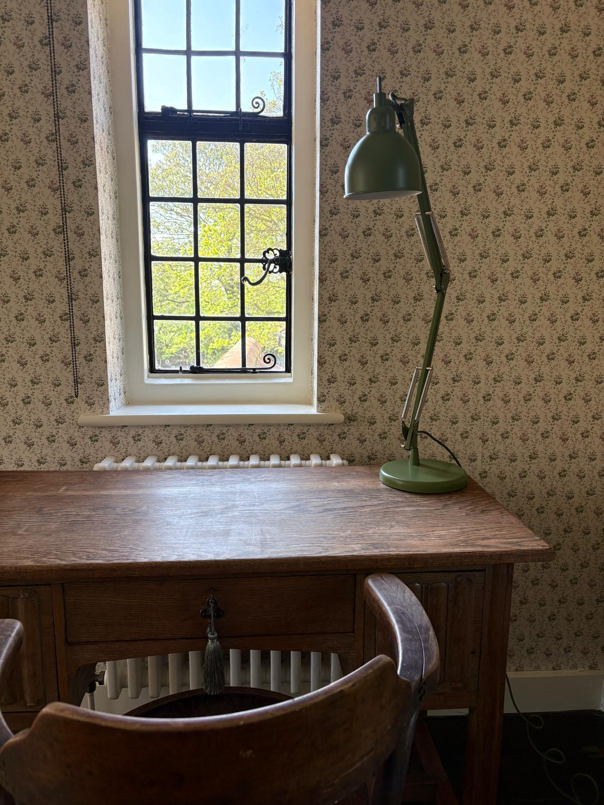

A substantial period house whose beamed ceilings, leaded windows and generous room proportions have accumulated quiet authority over centuries. The brief was to honour all of that while making it feel genuinely inhabited rather than preserved — the difference between a house and a home.
The boldest move is the main reception room's fireplace: a floor-to-ceiling field of hand-made zellige tile in teal and muted grey, set against the original surround. It could have overwhelmed the room. Instead it grounds it, giving the eclectic mix around it — a George Nelson pendant, colour-ordered bookshelves, a stack of vinyl records, a graphic Moroccan rug — something to push against.
The bedrooms work by commitment. In the main room, a small-print floral wraps walls, ceiling and curtains alike, creating the enveloping quality that only arrives when you don't stop halfway. Tucked under the eaves, a sleeping alcove has been fitted with a platform bed and built-in storage below, every inch accounted for. The same wallpaper reappears in the study, lighter this time against a crittall window and an old oak desk — the same pattern, a completely different mood.
The sitting room takes a quieter register: a long tufted sofa in tobacco velvet, an antique rug with a sheepskin thrown over it, lamp light rather than overheads. The kind of room that takes a few visits before you notice everything in it.






Next project